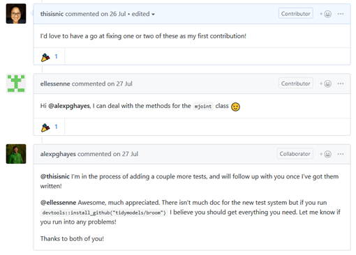
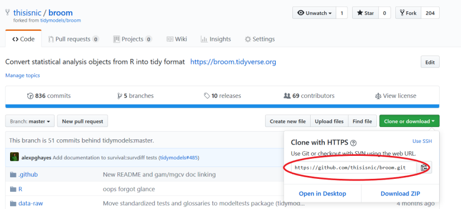
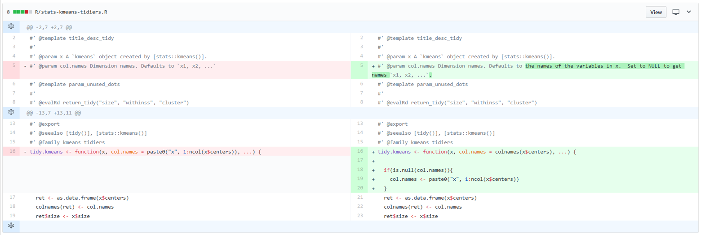
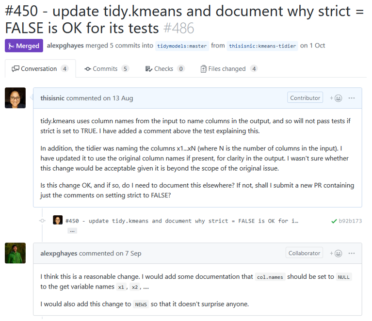

This year has been a crazy whirlwind for me – I moved job once, moved house 3 times, co-authored a course on Data Camp, got invited by a former colleague to assist with a workshop at rstudio::conf 2019, was accepted to present at the very same conference, and became a minor contributor to the tidyverse. In this blog post I’ll talk about reasons for contributing and then walk through the steps I took to help guide others.
A disclaimer before I start: I am no expert here and am talking about something I have done once. My aim here is to clarify the process and hopefully make it clear to other members of the R community that this isn’t as hard or intimidating as it might sound.
It all started with the fantastic talk by Mara Averick at the 2018 RStudio Conference. Mara talked about different ways of getting involved and made me realise that contributing, specifically code, was both something I wanted to do, and something that was within reach.
A while later, I saw this tweet by Alex Hayes, who was doing an internship at RStudio, and couldn’t turn down the opportunity. Massive thanks once again to both Alex and Mara!

I’d never thought about getting involved in contributing code because of my perception of some of the toxic culture of open source, and this perception isn’t totally unwarranted.
This year, however, I’ve seen a lot of evidence to suggest that this is changing, and, regardless, the R community, is way ahead of the curve in terms of being welcoming, friendly, and willing to help newbies of all varieties to get involved. I do not believe for even a split second that my concerns apply to the R community in 2018.
There are a lot of good reasons to contribute to open-source; half of the respondents to the Open Source Survey in 2017 said that their open source contributions helped them get their current job. My personal reasons for getting involved, however, were more about a) getting acquainted with some top-notch R code and hopefully levelling up my skills as a result, b) interacting with more of the R community, and c) helping lessen my imposter syndrome. I think it’s time for an inspirational quote now:
“When I started my transition into data science, I said yes to pretty much every opportunity that came my way, even if it felt slightly beyond my skill set or experience level…I said yes to many of these things when it felt like I wasn’t sure if I was ready.” - Julia Silge (Interview with And Comfort, October 2018)
So, without further ado, let’s take a look at the ten steps to becoming a tidyverse contributor. Please note that there may be nuances and details that I have missed here, but this should provide a rough guide to anyone who’s thinking about getting involved and wants to know a bit more about exactly what that looks like.
Just to be clear; these steps apply to contributing to R packages in general and not just the tidyverse. However, the tidyverse team have been especially good for encouraging people to get involved.
Step 1 - Decide How to Contribute
I want to emphasise at this point that contributing code is not the only way to get involved; the reason why I’m focussing on this in this blog post is because a) it’s what I did, and b) it’s the method of contribution I feel like people know the least about.
However, as Mara discusses in her talk (no really, just go watch it now, seriously!), there are other equally valid and important ways of getting involved.
Step 2 - Learn!
Whilst there is some pre-requisite knowledge required to contribute code to R packages, it’s not as much as I expected. You absolutely should be comfortable with working with and writing functions in R. Beyond that, some familiarity with git is needed – things like clone, commit, and push, though doing it all via RStudio is fine. You’ll need to know the basics of R package building – when I say basics, what I mean is that you’re not writing a package from scratch, so don’t need to know every little detail. However, you should have a good idea of the directory structure of an R package, how to write tests and documentation, and how to build the page. Finally, you’ll need to know how to create a pull request on GitHub, which, once you’ve conquered the other items on the list, fairly uncomplicated. I’ve linked to resources for all of these things at the end of this post.
Step 3 - Find an Issue
The next step is finding an issue to work on. Luckily, many issues are tagged on GitHub with “beginner friendly”, “help wanted”, or “good first issue” to help point you in the right direction.
In the GIF below, I show how to get from the CRAN page for a package – broom in this case – to a potential issue to work on. I first click on the URL next to “BugReports” to get taken to the GitHub issues page. Next I find a relevant tag – “beginner friendly” in this case. Once I click on the tag, I’m shown all issues with that tag. I then pick one, and read the description to see if it’s something I think would be good to look at getting involved with.

Step 4 - Ask if You Can Help
Don’t charge straight into trying to write code! You need to ask for help – it’s always good to check that someone else isn’t already working on this issue, and ask to get involved. You don’t want to spend ages working on something and then find out someone else has submitted a pull request first! Try to be as specific as possible – unlike my comment here, ellessenne says exactly what they’ll be looking at!

Step 5 - Fork the Repo
Forking the repo means making a copy of it which is saved to your GitHub account. Click on the button as shown below.

Step 6 - Open as New Project in RStudio & Make a Branch
Create a new project (“from version control”) in RStudio using the URL for your copy of the repo - the location for the URL is shown below.

Once you’re in this project, make a new branch, making sure “sync with remote” is checked.

Step 7 - Familiarise Yourself with the Code
Play with the code and see if you can reproduce the issue, and work out the cause. I tend to run through things one line at a time, not moving on til I have a pretty good idea what each line is meant to be doing.
Step 8 - Write Code
Once you’ve worked out how to fix the issue, it’s time to write your code! Conform to the coding style used in the rest of the code, be concise but clear, and don’t introduce any new dependencies (if this is needed, it should be discussed first). Don’t forget to update any function parameter documentation.
The image below shows a diff of the file I edited before and after the changes I made. There is very little changed – it’s best to work on small issues to build trust with the package maintainer over time.

Step 9 - Submit PR and Wait
Once I’d submitted my pull request, I waited with the patience of your average toddler that’s been sat down in front of a plate of marshmallows and told not to eat any. Look, I was excited – I was making my first tidyverse pull request! I nearly lost sight of the fact that people have lives, jobs, and frankly, other things to be doing with their time. Ultimately, I’m glad I didn’t nudge as I feel like it would have felt rude. There were a few changes and additions needed, but eventually my changes got merged into the master branch.

Resources
Talk by Mara Averick on contributing: https://www.rstudio.com/resources/videos/contributing-to-tidyverse-packages/
Guide to contributing code to the tidyverse: https://www.tidyverse.org/articles/2017/08/contributing/
rOpenSci contributing guide: https://ropensci.github.io/dev_guide/contributingguide.html
Repo walking through making a pull request: https://github.com/firstcontributions/first-contributions